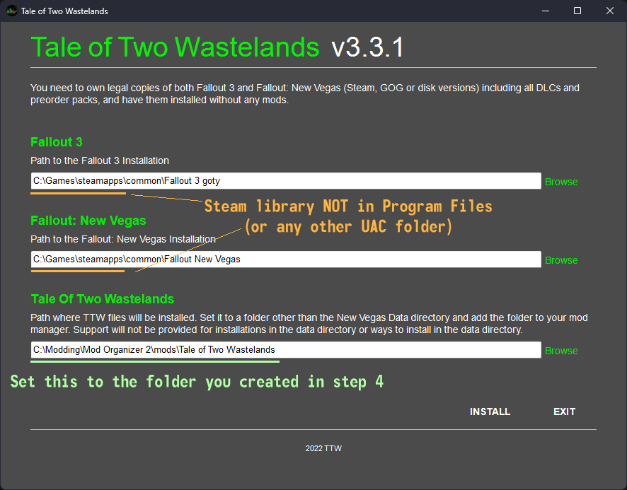

In this step, we will install and activate Tale of Two Wastelands through Mod Organizer 2.
If you run into any errors when installing, check the FAQ to see if it has the solution.
Make sure both Mod Organizer 2 and the game are closed.
From the TTW Download page, download the 3.3 Installer file.
Extract the contents of the 3.3 Installer archive to a new folder called TTW Installer
in a safe location outside of any default Windows folders.
Once everything has been extracted, navigate to Mod Organizer 2\mods\ and create a folder there named Tale of Two Wastelands.
If you are unsure as to where/what your MO2 Mods folder is, open up MO2, select the
button at the top, and select Open Mods folder.
Back in the TTW Installer folder, right-click the TTW Install.exe and select Run As Administrator.
In the installer, verify that the automatically set file paths for both your Fallout 3 and Fallout New Vegas installations are correct.
Set the Tale of Two Wastelands install path to the Mod Organizer 2\mods\Tale of Two Wastelands you created in step 4.

Ensure your paths look similar to the example above, then select Install.
The install may take a long time as the .ogg encoding is very CPU-intensive. It takes about 40 minutes on my 5600x but could take several hours or even longer on a slower CPU.
It is recommended to leave your computer alone and have any CPU-intensive applications closed during this time so as to not overheat your CPU and cause the TTW installation to fail.
Activating TTW in Mod Organizer 2
Launch Mod Organizer 2
If you installed TTW correctly with the correct filepaths, you should see the Tale of Two Wastelands mod in the left pane of MO2
If you do not see anything, you did not install TTW to the correct folder. Find out where the files were installed to and move them to Mod Organizer 2\mods\Tale of Two Wastelands
Click the checkbox next to it in the left pane, and the right pane should fill with plugins
 button at the top, and select Open Mods folder.
button at the top, and select Open Mods folder.